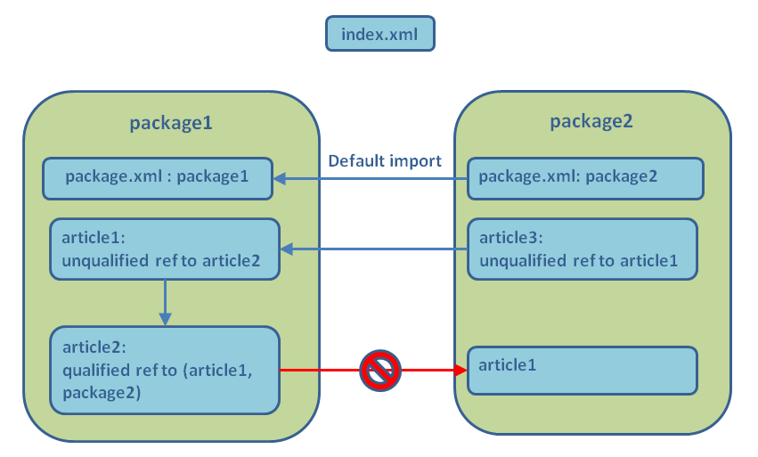

Home
Categories
Dictionary
Download
Project Details
Changes Log
What Links Here
How To
Syntax
FAQ
License
Packages dependencies
1 Grammar
2 Checking package dependencies
2.1 Dependency checks
2.2 Checking behavior on unsolved references
2.3 Examples
3 Don't include packages
4 Categories creation
4.1 Example
5 Examples
5.1 Basic example
5.2 A more complex example
5.3 A third example
6 Notes
7 See also
2 Checking package dependencies
2.1 Dependency checks
2.2 Checking behavior on unsolved references
2.3 Examples
3 Don't include packages
4 Categories creation
4.1 Example
5 Examples
5.1 Basic example
5.2 A more complex example
5.3 A third example
6 Notes
7 See also
As explained in the root directories and packages article, it is possible to use the generator on more than one root package. packages can be defined for each root directory.
It is possible to specify in the configuration file the dependencies or command-line property to define the allowed dependencies between packages. Every found dependency which is not allowed in this dependencies configuration will emit an exception in the tool logger[1]
The configuration of the ckage dependencies file allows to:
Note that regardless of the check type, if an element correspond to a not allowed dependency between packages, the element will not be shown, except for references, with the "showAndWarn" or "show" type. For example, for an image, the image will not be shown regardless of the check type.
To specify this, you can use the following attributes on the
It is possible to declare that a package will not be included in the wiki output, by specifying the
For example:
It is possible to specify in the configuration file the dependencies or command-line property to define the allowed dependencies between packages. Every found dependency which is not allowed in this dependencies configuration will emit an exception in the tool logger[1]
These dependencies cover all the elements which have a "package" attribute, such as the ref element for example
. Note that the elements at the origin of the error will still be generated correctly.The configuration of the ckage dependencies file allows to:
- Specify which dependencies between packages are allowed
- Specify how references for not included packages will appear
- Specify if a package can declare categories
Grammar
See the packages dependencies Schema.Checking package dependencies
The configuration of the ckage dependencies file amllows to Specify which dependencies between packages are allowed.Dependency checks
ThedefaultCheck (for the root) or the check (for all child packages dependencies) can have the following values:- "accept": the dependencies between different packages are allowed
- "refuse": the dependencies between different packages are refused, and a warning message will be issued for any detected dependency. If the dependency is a reference will not be shown at all
- "showAndWarn": the dependencies between different packages are refused, and a warning message will be issued for any detected dependency. If the dependency is a reference it will be shown as a text (without a hyperlink)
- "show": the dependencies between different packages are refused, but no warning message will be issued for any detected dependency. If the dependency is a reference it will be shown as a text (without a hyperlink)
Note that regardless of the check type, if an element correspond to a not allowed dependency between packages, the element will not be shown, except for references, with the "showAndWarn" or "show" type. For example, for an image, the image will not be shown regardless of the check type.
Checking behavior on unsolved references
It is possible to configure the dependencies to specify that unresolved references from one package to another will not emit an error.To specify this, you can use the following attributes on the
package or the dependency element:- The value
falsefor theshowUnresolvedReferencesattribute specifies that references and resources which are not found from the package to the other package will not emit an error - The value
falsefor theshowUnresolvedImagesattribute specifies that images which are not found from the package to the other package will not emit an error - The value
falsefor theshowUnresolvedInfoboxesattribute specifies that infoboxes which are not found from the package to the other package will not emit an error
Examples
In the following example, unresolved references, resources or images any package to any other package will not emit any error:<packagesDependencies defaultCheck="accept" showUnresolvedReferences="false" showUnresolvedImages="false"> _ .... </packagesDependencies>In the following example, unresolved references, resources or images from
package1 to any other package will not emit any error:<packagesDependencies defaultCheck="accept"> <package name="package1" showUnresolvedReferences="false" showUnresolvedImages="false" /> </packagesDependencies>In the following example, unresolved references, resources or images from
package1 to package2 will not emit any error, but unresolved references or images from package1 to any other package will emit an error:<packagesDependencies defaultCheck="accept"> <package name="package1"> <dependency name="package2" showUnresolvedReferences="false" showUnresolvedImages="false" /> </package> </packagesDependencies>
Don't include packages
Main Article: Fallback articles
It is possible to declare that a package will not be included in the wiki output, by specifying the
includePackage for the package. This attribute can have one of the following values:- "include": the default value, specifies that the package will be included in the wiki
- "forget": specifies that the package will not be included in the wiki, but that all errors detected in the package (for example references errors detected in this package will still be emitted
- "forgetSilent": specifies that the package will not be included in the wiki, and that all errors detected in the package will be forgotten and not be emitted
For example:
<packagesDependencies defaultCheck="accept"> <package name="package1" /> <package name="package2" includePackage="forgetSilent" /> </packagesDependencies>In this example, the
package1 is included in the wiki output, but the package2 is not included, and all errors detected in package2 will not be emitted.Categories creation
It is possible to declare that a package can not declare categories, either by specifying a categories file to create categories descriptions, or by simply add a cat element at the end of an article.Example
For example in the following example, articles inpackage1 can create categories, but elements in packaeg2 can not.<packagesDependencies> <package name="package1" /> <package name="package2" allowCategoryCreation="false" /> </packagesDependencies>This means that:
- If no article in
package1define the "cat2" package, and it is defined in an article inpackage2, and error will be emitted - But if an article in
package1define the "cat1" package, and it is defined in an article inpackage2, no error will be emitted
Examples
Basic example
In the following example, we refuse dependencies frompackage1 to package2:<packagesDependencies defaultCheck="accept"> <package name="package1" > <dependency name="package2" check="refuse" /> </package> </packagesDependencies>In this example, Dependencies from
package1 to package2 are not allowed. One of the references in the articles in package1 will therefore be refused and lead to a warning during parsing:
A more complex example
<packagesDependencies defaultCheck="accept"> <package name="package1" > <dependency name="package2" check="refuse" /> </package> <package name="package2" defaultCheck="refuse"> <dependency name="package3" check="accept" /> </package> </packagesDependencies>Here:
- By default dependencies between packages are allowed
- Dependencies from
package1topackage2are not allowed - By default all Dependencies from
package2are not allowed - Dependencies from
package2topackage3are allowed
A third example
<packagesDependencies defaultCheck="show"> <package name="package1" > <dependency name="package2" check="showAndWarn" /> </package> <package name="package2" defaultCheck="refuse"> <dependency name="package3" check="accept" /> </package> </packagesDependencies>Here:
- By default dependencies between packages are not allowed, and references will be shown as text sentences (without hyperlinks). However no warning message will be issued for a detected dependency
- Dependencies from
package1topackage2will also be shown as text sentences (without hyperlinks). A warning message will be issued for each dependency - By default all Dependencies from
package2are not allowed - Dependencies from
package2topackage3are allowed
Notes
See also
- Root directories and packages: This article explains how to use the generator with more than one root directory
×

Categories: Configuration | Structure